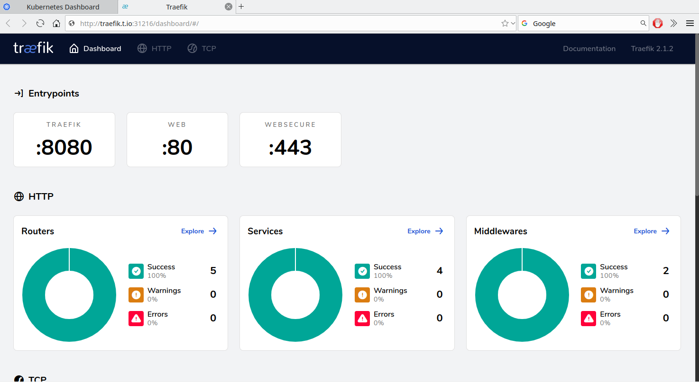
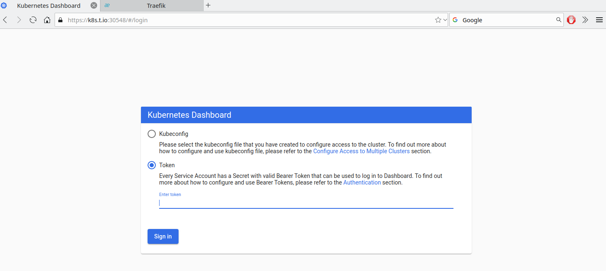
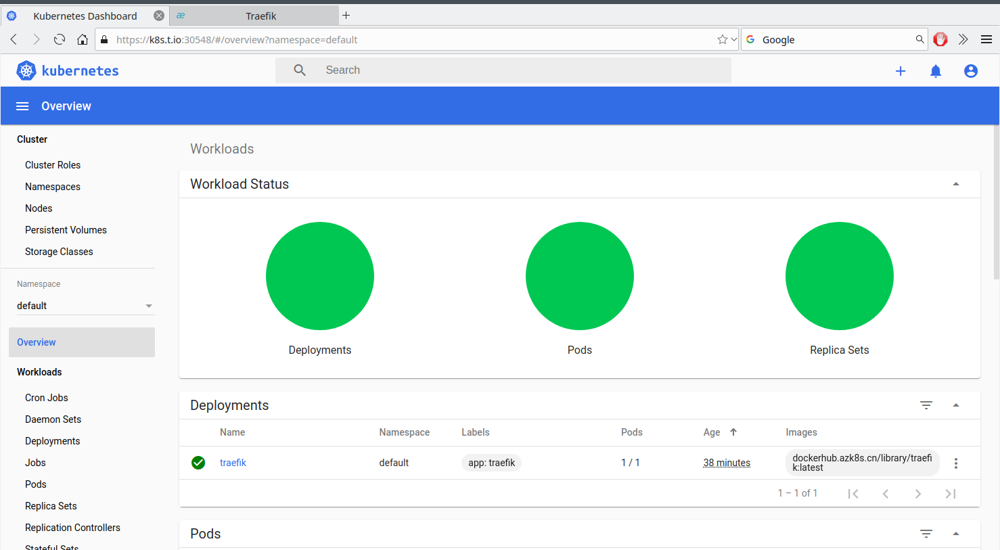

Traefik是一个开源的kubernetes ingress controller,用于实现边缘路由，反向代理，自动发现服务。
Traefik支持多种集群技术做为它的Providers,主流使用的如Kubernetes，Docker，Docker Swarm，AWS，Mesos等等

Traefik是一个边缘路由器，可以作为Kuberetes服务对外暴露的入口。

更的详细介绍参考官方网站：https://docs.traefik.io/
安装
安装步骤：
1 | [root@kube-master-1 yaml]# ll |
依次使用kubectl apply -f xx.yaml命令安装
1 | [root@kube-master-1 yaml]# cat 0.traefik-crd.yaml |
1 | apiVersion: apiextensions.k8s.io/v1beta1 |
1 | [root@kube-master-1 yaml]# cat 1.traefik-rbac.yaml |
1 | kind: ClusterRole |
1 | [root@kube-master-1 yaml]# cat 2.traefik-sa.yaml |
1 | apiVersion: v1 |
1 | [root@kube-master-1 yaml]# cat 3.traefik-deployment.yaml |
1 | kind: Deployment |
1 | [root@kube-master-1 yaml]# cat 4.traefik-service.yaml |
1 | apiVersion: v1 |
1 | [root@kube-master-1 yaml]# cat 5.traefik-dashboard.yaml |
1 | apiVersion: traefik.containo.us/v1alpha1 |
1 | [root@kube-master-1 yaml]# cat 6.kubernetes-dashboard.yaml |
1 | # Copyright 2017 The Kubernetes Authors. |
1 | # 7.kubernetes-dashboard-ingress.yaml |
1 | # 8.kubernetes-dashboard-service-account.yaml |
完成后效果
1 | [root@kube-master-1 yaml]# kubectl get ingressroute |
我们在外面绑定traefik.t.io与 k8s.t.io hosts
1 | [Tue Jan 14 talen@tp ~]$ cat /etc/hosts |

创建dashboard访问service acount
生成证书
1 | [root@kube-master-1 yaml]# mkdir certs |
1 | [root@kube-master-1 yaml]# kubectl -n kubernetes-dashboard describe secret $(kubectl -n kubernetes-dashboard get secret | grep kuberetes-dashboard-admin-user | awk '{print $1}') |
使用token访问kuberetes-dashboard

